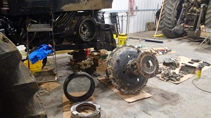
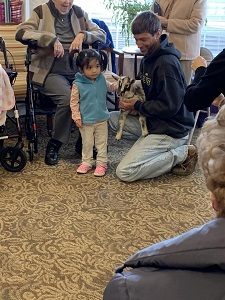

Do you remember the theme song from the Dukes of Hazzard? You know the Good Ol' Boys
by
Waylon Jennings? Now take that song and put a modern twist on it like Lil Wyte did here and you have Doug Schmidt. A modern good ol' boy.
Doug's life in a song...

This is the cleanest I have ever seen Doug while he is at the farm. I bet that didn't last long
either.
I remember one of the first times helping my dad work on equipment at the farm. My dad and brothers
couldn't reach to put a new fitting and gasket inside a sprayer tank. Dad had me crawl inside to get
the fitting and gasket in the hole so they could thread the nut on it. After that I was helping dad
all the time. I was the smallest so I could fit places dad and the other boys couldn't. --Doug
Schmidt
This man is wise beyond his time. He is ready to help anyone in a heartbeat and not think twice about it.
He grew up on a farm in rural Nebraska learning everything he could from his dad. I don't think
there
is a time that I came to Doug with a problem he hasn't been able to help me fix.
Fun with the animals

Most of the time you can find Doug somewhere in the country. He's either in the field working, doing
something with the many different animals he has adopted, elbows deep in grease working on something or
driving to pick up some new piece of equipment he just bought. When he has a little free time try
looking in a tattoo shop for him.
Doug's newest tattoos
Doug Schmidt... there is a lot to say about him. To pick a certain thing and talk about it is hard. He is
always there. Sometimes it may take him a little bit to answer because he is always helping, but he will
be there. He is very caring individual. I know I wouldn't be where I am at today if it wasn't
for him. The struggles he went through made it possible for him to help me through my struggles.
He is a teacher. He taught me how to work on vehicles. He wouldn't just do the work for me, I had to
start working on something while he was watching an telling me what to do. Hand's on instruction,
it's the best way to learn anything.
Giving horses treatsMoving excavator to job sitePicking cornPlanting soybeansBailing hayBetter believe it